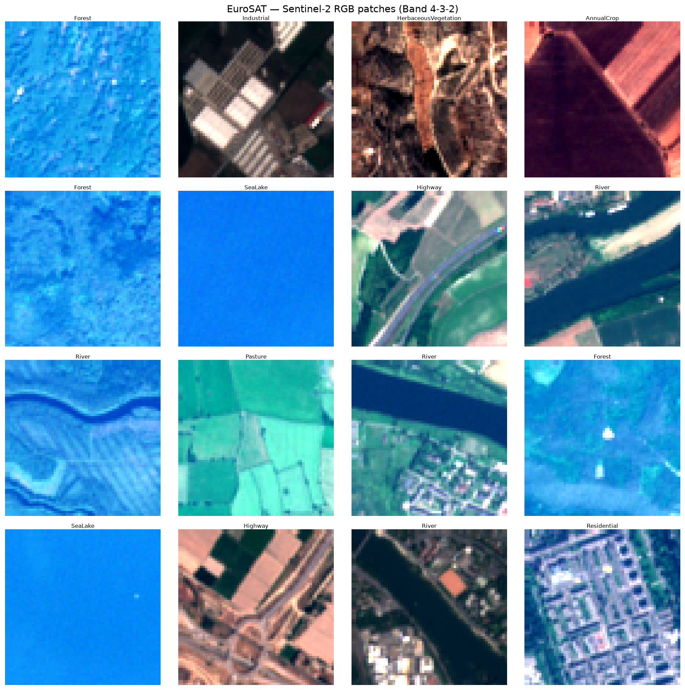
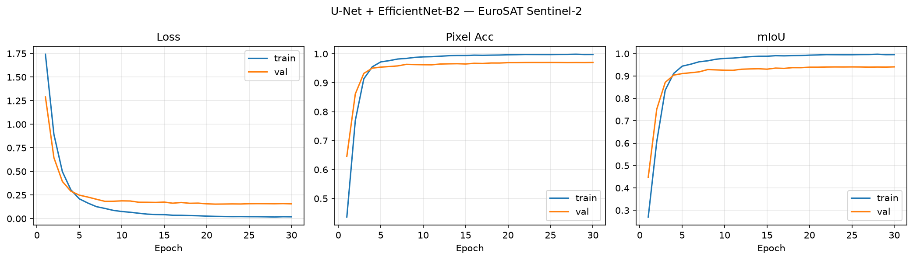
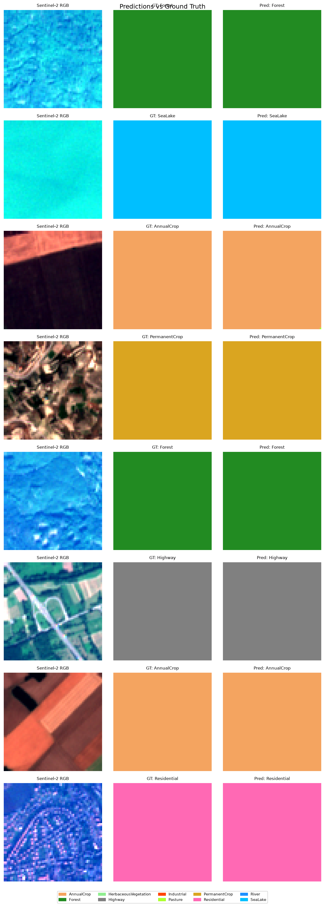
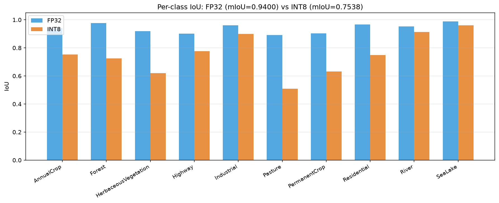
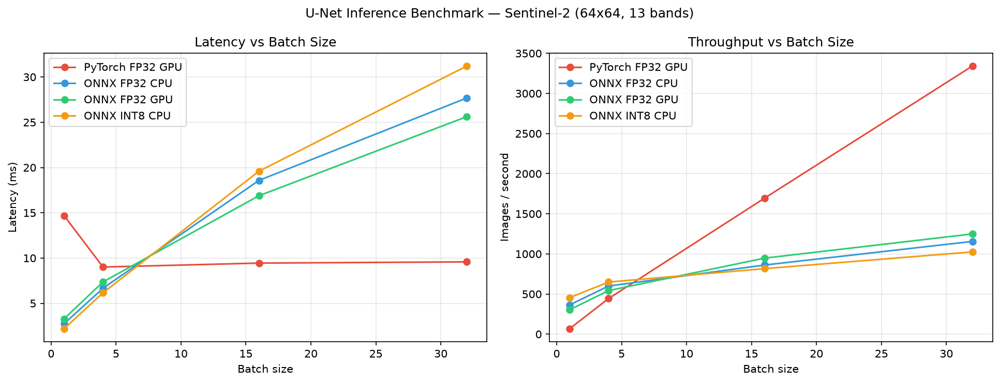
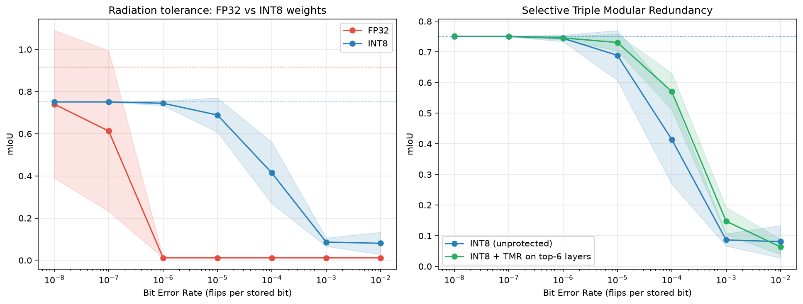

Bandwidth is the scarcest thing in orbit
A satellite sees far more than it can ever send home. The link to the ground station is narrow and only open for minutes at a time, so most of what a sensor captures is thrown away before it is ever transmitted.
The alternative is to move the intelligence up with the sensor: run the neural network on board, and downlink answers instead of raw pixels. That is exactly what ESA's φ-sat missions do, classifying and filtering imagery directly on the satellite. But on-board hardware is unforgiving: a fixed, low-power processor, no cloud to fall back on, and a stream of cosmic radiation flipping bits in memory.
I built that whole chain myself, end to end: train an accurate land-cover model, then make it fit to fly by shrinking it, rewriting it in C++, benchmarking it, and stress-testing it against radiation. Both halves are below.
The end-to-end pipeline
Sentinel-2 (13 bands) → U-Net / EfficientNet-B2 (0.936 mIoU) → ONNX FP32 (38.3 MB) → INT8 quantization (10.1 MB) → C++ engine (155 KB, no Python) → on-board, radiation-tested.
Mapping land cover from Sentinel-2
The task is semantic segmentation: label every pixel of a Sentinel-2 image with the kind of surface it shows, ten classes ranging from forest and water to industrial and residential. I trained on EuroSAT, 27,000 Copernicus Sentinel-2 patches spanning 34 European cities.
Crucially, I used all 13 spectral bands, not just the visible RGB. A satellite sees red-edge, near-infrared and short-wave infrared light that separates crops from pasture and water from shadow in ways the human eye never could.

Architecture: adapting a pretrained encoder to 13 bands
The backbone is a U-Net with an EfficientNet-B2 encoder pretrained on ImageNet. The catch: ImageNet has 3 channels, Sentinel-2 has 13. I adapted the first convolution from 3 to 13 inputs by averaging the pretrained RGB weights and tiling them across every band, so the network keeps the benefit of pretraining instead of starting from scratch.
Skip connections let the decoder fuse the high-level "what" from the bottleneck with the fine spatial "where" from early layers, the detail that makes crisp pixel masks possible.
Training
Thirty epochs, AdamW with cosine-annealed learning rate, per-band normalisation, about 50 seconds per epoch on a single GPU. Validation tracks training closely, no dramatic overfitting, the model settling at a strong 0.936 mIoU and 96.8% pixel accuracy on the held-out test set.

Predictions vs ground truth
Predictions line up with the ground truth across the full range of classes. The hardest cases, as expected, are the vegetated classes whose spectra overlap, Pasture and HerbaceousVegetation, while water and forest are near-perfect.
| Class | IoU |
|---|---|
| SeaLake | 0.991 |
| Forest | 0.973 |
| Residential | 0.960 |
| River | 0.956 |
| Highway | 0.895 |
| Pasture | 0.879 |

Taking the model on-board
A 0.936 mIoU model in a notebook is one thing. Getting it to run inside a satellite's power and compute budget is another. I exported the trained U-Net to ONNX, then quantised it from 32-bit floats to 8-bit integers with static post-training quantization.
The accuracy cost
INT8 makes the model 3.8× smaller (38.3 → 10.1 MB) and faster, but it is not free. Post-training quantization costs 18.6 mIoU points, concentrated exactly in those wide-spectrum classes that are hard to represent with a single 8-bit scale.
This is the ceiling of post-training quantization, not the end of the road: the standard fix is quantization-aware training, and it would be the natural next iteration before any real deployment.

At batch 1, the CPU beats the GPU
I built a standalone C++ ONNX Runtime engine (a 155 KB binary, no Python interpreter anywhere in the loop) and benchmarked every path. On-board inference happens one image at a time, and in that batch-1 regime the GPU is a bad fit: it spends most of its time on launch and transfer overhead it never gets to amortise. ONNX Runtime on CPU beats PyTorch-on-GPU by roughly 5×. The GPU only pulls ahead once the batch is large enough, a luxury a satellite processing one acquisition doesn't have.

| Backend (batch 1) | Latency | Throughput |
|---|---|---|
| PyTorch FP32 · GPU | 14.68 ms | 68 img/s |
| ONNX FP32 · CPU | 2.74 ms | 365 img/s |
| ONNX INT8 · CPU | 2.19 ms | 456 img/s |
| C++ INT8 · CPU (100 runs) | 3.62 ms | 276 img/s |
What radiation does to a model in orbit
In orbit a single charged particle can flip a bit in memory, a Single Event Upset. If that bit belongs to a network weight, the output changes. I modelled radiation as random bit-flips at a rising error rate, corrupted the weights, and re-measured accuracy. The difference between FP32 and INT8 is dramatic, and it runs the opposite way to what you'd guess.
0.03 into 1e38 and detonate the whole output. An INT8 weight is an integer with a fixed scale, so its worst case is a small, bounded error. Quantization turns out to be not just compression but a fault-tolerance mechanism.
| Weight | A flipped bit |
|---|---|
| FP32 · 32 bits | Exponent bit flips are catastrophic. Dead at BER 1e-6. |
| INT8 · 8 bits | Bounded error, graceful degradation. Still 0.745 mIoU at the same dose. |

A per-layer sensitivity scan showed the fragile weights all sit in the decoder, near the output, where an error has no downstream layers to absorb it. Protecting only those six of about fifty layers with triple-modular redundancy recovers most of the loss: where you spend redundancy matters more than how much.
Summary
| Accuracy | 0.936 mIoU across 13 bands and 10 classes, with a global, ordering-independent metric. |
| Compression | INT8 gives 3.8× smaller and faster, at a −18.6 mIoU cost, with QAT as the next step. |
| Deployment | A 155 KB C++ binary with no Python, and CPU beats GPU at batch 1. |
| Resilience | INT8 tolerates orders of magnitude more radiation; selective TMR hardens the few layers that matter. |
The whole chain runs on commodity hardware, from raw Copernicus pixels to a binary that could run in orbit, built end to end.